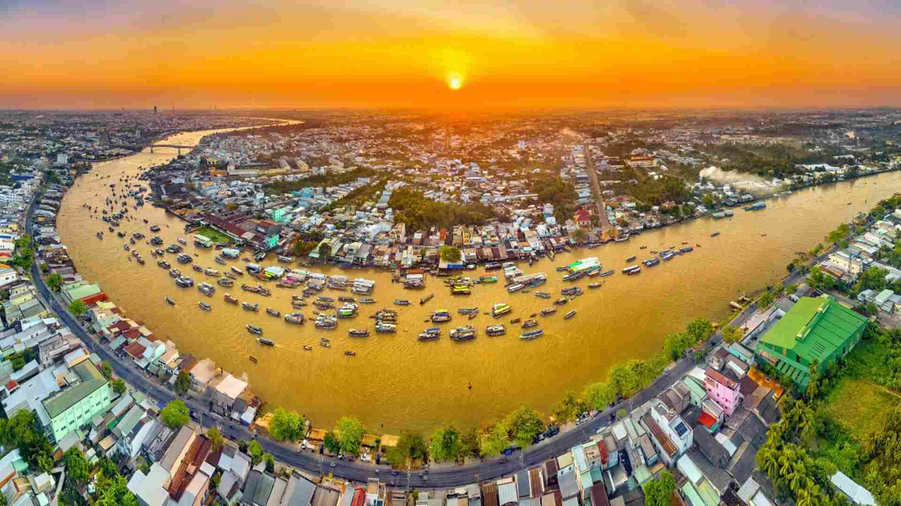
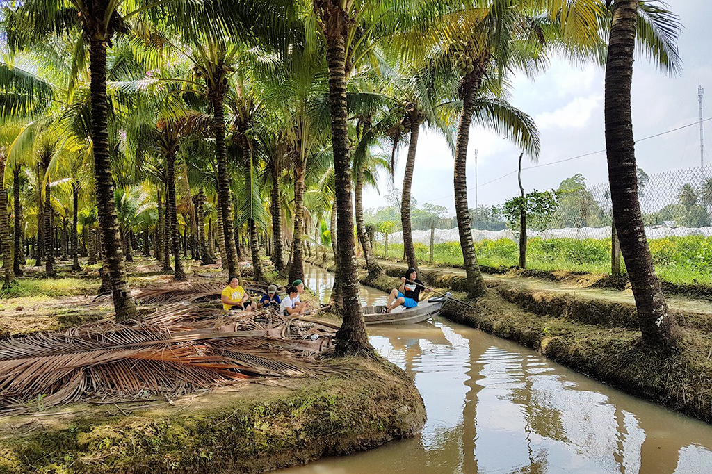
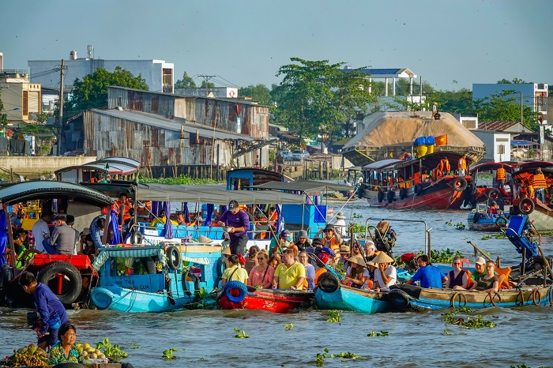
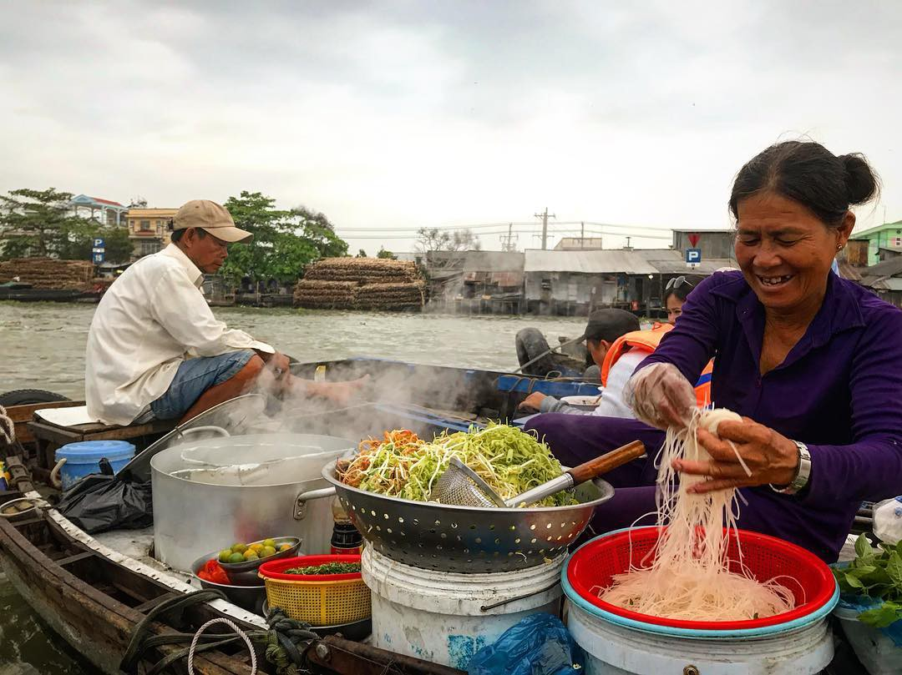
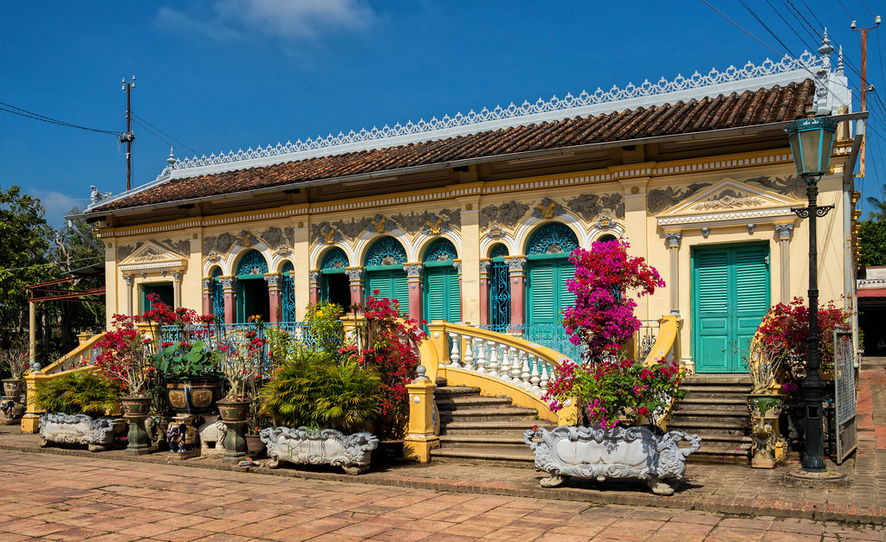

CẦN THƠ
Ấn tượng ban đầu về Cần Thơ. Thoạt nhìn, Cần Thơ có vẻ là một thành phố nhộn nhịp, với dòng thương mại tấp nập chảy liên tục trên sông Hậu. Nhưng nếu bạn dành cho mình một phòng nghỉ bên bờ sông xanh mát, thưởng thức các loại trái cây chín mọng dưới ánh nắng và cá tươi ngon từ sông, lướt nhẹ trên chiếc xuồng ba lá qua những con kênh ấm áp, bạn sẽ nhanh chóng nhận ra rằng vẻ ngoài hiện đại của Cần Thơ chỉ là một nửa câu chuyện. Nửa còn lại? Là những bình minh mờ sương bên mặt nước, những buổi chiều lười biếng đong đưa trong võng, và những buổi tối dễ chịu được báo hiệu bởi tiếng côn trùng rộn rã. Dưới bầu trời xanh rực rỡ của Đồng bằng sông Cửu Long, Cần Thơ để lại một ấn tượng sâu sắc.

Những điều nhất định phải làm ở Cần Thơ
Tham quan các cù lao
Dù bạn đi bằng xe đạp hay xuồng ba lá, các cù lao ở Cần Thơ là nơi bạn cảm nhận được nhịp sống thật sự của người dân địa phương. Hãy đặt tour cộng đồng để dùng bữa trưa cùng gia đình địa phương, khám phá làng nghề làm bánh tráng, vườn cây trái và tận hưởng nét duyên dáng đặc trưng của miền Tây sông nước.

Thức dậy sớm để trải nghiệm chợ nổi
Khởi đầu ngày mới thật đáng giá khi được chiêm ngưỡng chợ nổi Cần Thơ rộn ràng với những chiếc thuyền đầy màu sắc và sản vật độc đáo. Chợ nổi Cái Răng là nổi tiếng nhất trong khu vực, nhưng bạn cũng nên hỏi người dân địa phương về những chợ nổi nhỏ hơn để có thể giao lưu, trò chuyện cùng người bán hàng.

Thưởng thức hủ tiếu trên thuyền
Không gì tuyệt hơn bữa sáng hủ tiếu nóng hổi được phục vụ ngay trên thuyền vào buổi sáng sớm. Sợi bún dai dai làm từ bột năng, giá đỗ giòn rụm và thịt heo thái mỏng hòa quyện trong nước dùng đậm đà. Hãy thưởng thức tô hủ tiếu giữa không gian náo nhiệt của chợ nổi.

Nhà cổ Bình Thủy
Hãy bước ngược thời gian để khám phá cuộc sống của những gia đình thương gia giàu có ở Cần Thơ. Được xây dựng từ năm 1870, ngôi nhà sơn màu sáng này đã là nơi sinh sống của nhiều thế hệ nhà Dương, là sự kết hợp thú vị giữa kiến trúc Pháp và Á Đông.

Thư giãn bên bờ sông
Cần Thơ có nhiều lựa chọn lưu trú hấp dẫn, nơi những du khách tinh tế có thể tận hưởng không gian nghỉ dưỡng nhiệt đới bên bờ sông. Hãy tự thưởng cho mình kỳ nghỉ tại Azerai Cần Thơ, thư giãn với sự hiếu khách nồng hậu tại Victoria Cần Thơ, hoặc trải nghiệm homestay thân thiện với môi trường tại Mekong Rustic.
Thời tiết Cần Thơ
Cần Thơ có khí hậu nhiệt đới. Mùa hè thường mưa nhiều, còn phần lớn thời gian còn lại trong năm thì nóng và khô. Tháng 12 và tháng 1 là những tháng mát mẻ nhất. Mưa thường xuất hiện đều đặn từ tháng 7 đến tháng 11, và nhiệt độ cao nhất vào khoảng từ tháng 3 đến tháng 6.
Phương tiện di chuyển ở Cần Thơ
Sân bay quốc tế Cần Thơ cách trung tâm thành phố chỉ khoảng 20 phút, với các chuyến bay từ những trung tâm lớn của Việt Nam. Xe khách từ TP. Hồ Chí Minh đi Cần Thơ mất khoảng 4 tiếng, dừng tại bến xe cách thành phố 4 km. Bạn cũng có thể đến Cần Thơ bằng đường sông, với các chuyến du thuyền từ TP. Hồ Chí Minh hoặc Campuchia. Trong thành phố, taxi địa phương luôn sẵn sàng phục vụ. Bạn cũng có thể đạp xe trên các cù lao và những con đường dẫn ra khỏi thành phố. Phà địa phương hoạt động đều đặn giữa đất liền và các cù lao.